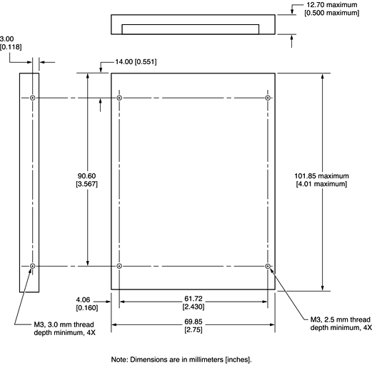

Figure 3-3 shows the maximum dimensions of the hard disk and the location of the mounting holes. The hard disk is the same physical size as the ones in other recent PowerBook computers: only 12.7 mm (0.5 inches) high.
The minimum clearance between any conductive components on the drive and the bottom of the mounting envelope is 0.5 mm.
Figure 3-3 Maximum dimensions of the internal hard disk
